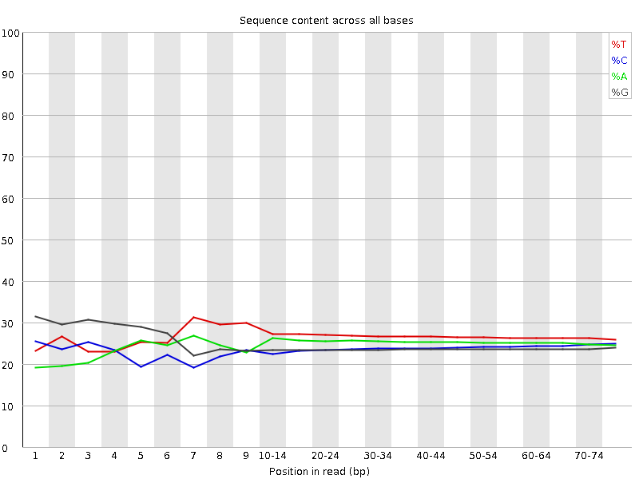
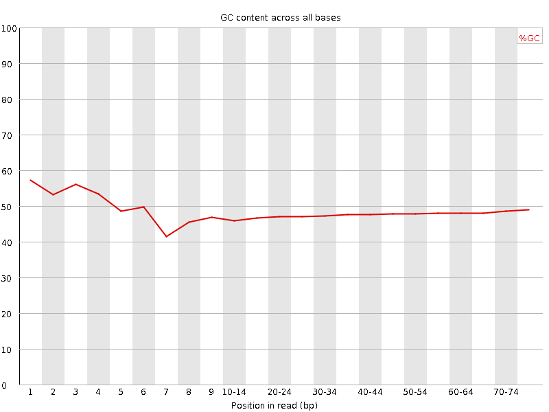
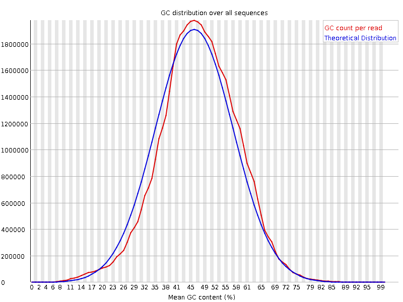
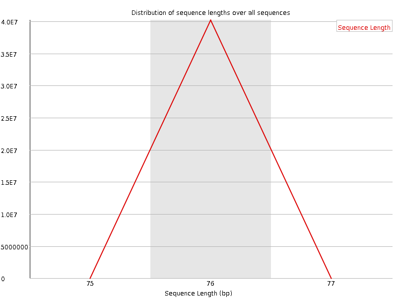
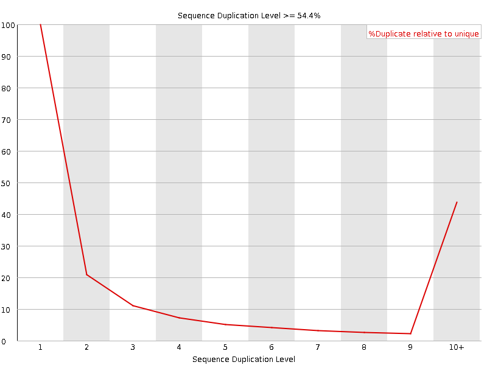
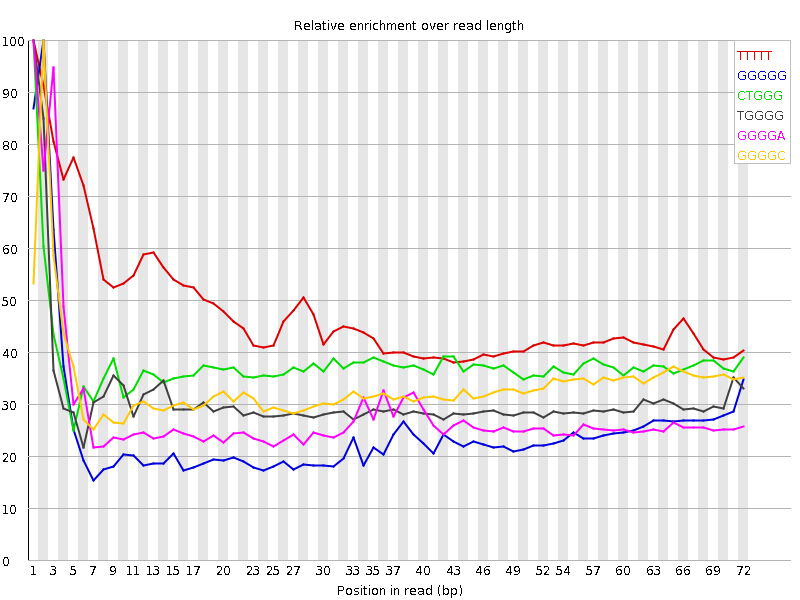

![[OK]](Icons/tick.png) Basic Statistics
Basic Statistics
| Measure | Value |
|---|---|
| Filename | SRR307901_1.fastq |
| File type | Conventional base calls |
| Encoding | Sanger / Illumina 1.9 |
| Total Sequences | 40190954 |
| Filtered Sequences | 0 |
| Sequence length | 76 |
| %GC | 48 |
![[FAIL]](Icons/error.png) Per base sequence quality
Per base sequence quality

Per sequence quality scores

Per base sequence content

![[WARN]](Icons/warning.png) Per base GC content
Per base GC content

Per sequence GC content

Per base N content

Sequence Length Distribution

Sequence Duplication Levels

Overrepresented sequences
No overrepresented sequences
Kmer Content

| Sequence | Count | Obs/Exp Overall | Obs/Exp Max | Max Obs/Exp Position |
|---|---|---|---|---|
| TTTTT | 9446540 | 2.4247696 | 5.068057 | 1 |
| GGGGG | 5395465 | 2.326288 | 9.362667 | 2 |
| CTGGG | 5374930 | 2.110974 | 5.5816445 | 1 |
| TGGGG | 4895885 | 1.902911 | 6.1123447 | 1 |
| GGGGA | 4293085 | 1.7719551 | 6.215965 | 1 |
| GGGGC | 3893250 | 1.6961716 | 5.015466 | 2 |
| GTGGG | 4049010 | 1.5737513 | 6.2053137 | 1 |
| GGGGT | 4006665 | 1.5572928 | 7.01205 | 3 |
| CGGGG | 2661890 | 1.1597052 | 7.6939697 | 1 |